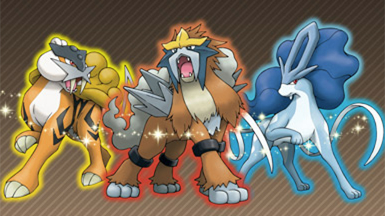

In 2000 GameFreak released Pokemon Gold, Silver, and Crystal. It debuted 100 more pokemon including the starters Chikorita, Cyndaquil, and Totodile. Some of the new pokemon are part of original evolution lines like Magmortar, an evolution from Magmar, and baby pokemon which come before the evolution line like Pichu, who evolves into Pikachu. Also there are two new types of pokemon, Dark and Steel. Even though Generation 2 did introduce many things it left out many things. It was the only generation to NOT include new fossil pokemon, a dragon pseudo-legendary Pokemon, a new villinous team, and a new Victory Road.
